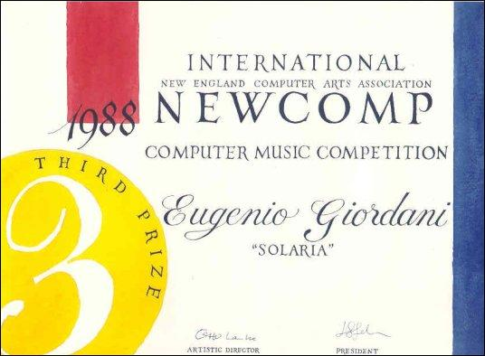

SOLARIA (1988)
(per suoni elettronici a due tracce) (Durata: 11' : 43")
Solaria è il primo lavoro che utilizza, oltre ai suoni elettronici, soprattutto suoni elaborati di pianoforte.
Durante i seminari di Musica Complessità ove ho conosciuto e frequentato per nove giorni Barry Truax, ho avuto
modo di approfondire la tecnica di sintesi conosciuta come Sintesi Granulare. Subito dopo ho iniziato a
pensare ad un brano che utilizzasse tale tipo di sintesi in combinazione con la sintesi "wavetable" utilizzata
in Ladies & Gentlemen". Tra il 1985 e il 1988 avevo a disposizione presso l'Iselqui di Ancona, un computer VAX
730 e 785 e dapprima una versione Music 11 che girava (a fatica) in ambiente VMS e successivamente una delle
primissime versioni di Csound. L'idea compositiva di Solaria nasce quindi dalla possibilità di esplorare
l'essenza timbrica dei suoni di pianoforte attraverso due processi di sintesi rispettivamente basati
sull'analisi in frequenza e sull'elongazione temporale dei suoni precedentemente registrati.
Il materiale derivava da un database di suoni di pianoforte utilizzato per realizzare uno strumento digitale a
campionamento per un'azienda elettro-musicale. Il database era costruito analizzando in frequenza i suoni
originali e producendo "waveform" che esprimevano i cambi spettrali più significativi secondo un procedimento
che oggi potremmo anche assimilare alla Group Additive Synthesis. Le forme d'onda del database rappresentavano
una sorta di materiale "distillato" armonico, privato della componente temporale e di quegli elementi
caratterizzanti che sono per esempio i rumori e le forti inarmonicità presenti nel suono d'origine. Una parte
dei suoni, specialmente quella che caratterizza la parte iniziale del brano, sono ottenuti interpolando e
sovrapponendo il materiale armonico formato da insiemi di "waveform" mentre la restante parte è affidata alla
granulazione dei suoni d'origine, così come erano dalla registrazione. Nella sezione centrale, che definisce
l'elemento estraneo, vengono usati gruppi di 6 suoni sinusoidali organizzati secondo serie geometriche di
ragione 1.5.
La sezione finale riutilizza il materiale armonico secondo una doppia serie di glissati infiniti, ascendente e
discendente, applicando quasi alla lettera la tecnica già impiegata da Risset.
L'idea extra-musicale a cui si ispira Solaria è legata al clima fantascientifico di "Fondazione e Terra" di I.
Azimov ed in particolare dal capitolo che tratta del pianeta Solaria, delle sue grotte sotterranee, dei suoi
robots minacciosi, dell'incanto e della paura dell'ignoto. L'intero brano rappresenta infatti la metafora di
un viaggio interplanetario, di un avvicinamento, di un approccio, di una drammatica ripartenza....
Credo di aver sognato, in un letto d'ospedale e sotto gli effetti dell'anestesia per un lieve intervento, il
clima sonoro e tutta l'organizzazione formale del brano.
Da un punto di vista strettamente tecnico, Solaria è stato realizzato prevalentemente con la Sintesi Granulare
implementa con Csound. Il codice della sintesi è riportato integralmente nel volume "Il Suono Virtuale" di R.
Bianchini e A.Cipriani (Ed. Contempo). E' interessante notare come in quel periodo, Csound non disponeva di un
modulo di granulazione, quindi fui costretto a realizzarlo con gli "opcode" allora disponibili. La prima
implementazione fu realizzata su un computer VAX 785 in ambiente VME e successivamente su PC sfruttando una
versione di Csound "portata" in ambiente DOS su PC con l'aiuto di Francesco Castelli (ingegnere elettronico).
Era stupefacente vedere un PC di allora (un 286 o massimo un 386) generare migliaia di grani al secondo
(ovviamente non in tempo reale). Quando informai Barry Truax di questo piccolo successo, ricevetti un feedback
da parte di Otto Laske al quale Barry aveva riferito del programma. Ecco qui riprodotta la lettera di Otto
Laske poichè mi sembra importante riportare questo particolare che forse non è troppo
conosciuto.

Solaria - (mp3) Da 7':05 a 8':52" (Sonogramma)
Nel 1988, "Solaria" ha ricevuto il 3° premio assoluto al Concorso Internazionale Newcomp (New England Computer Art Association)
